Mesh simplification with quadric error metrics and Loop subdivision, written from
scratch in Python for my Computer Graphics course project.
The Stanford Bunny:
triangles and KB, reduced to
triangles and KB
with a mean surface error of % of its size.
Try it: drag the slider to change the level of detail
loading…
Triangles
-
File size
-
Mean error
-
Of the original
-
Mean error is the average distance between the simplified and the original surface,
as a percentage of the model's bounding-box diagonal. Drag to orbit, scroll to zoom.
Before and after
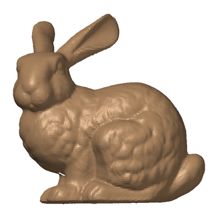
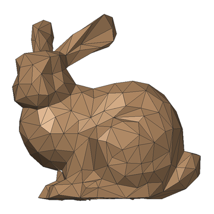
Left of the divider: the bunny at 1% of its triangles (wireframe).
Right: the original scan. Same camera, same scale.
Results
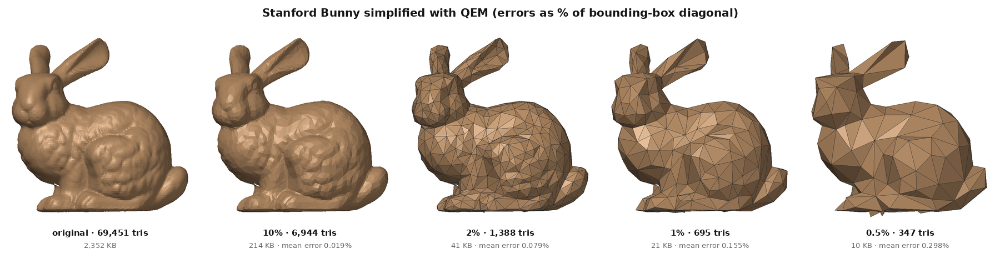
One simplifier run down in stages gives every level of detail.
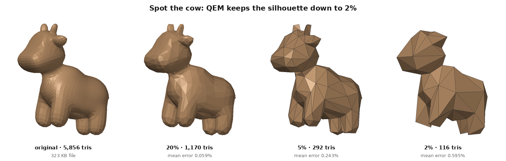
Spot: the silhouette survives down to 2%; small features go first.
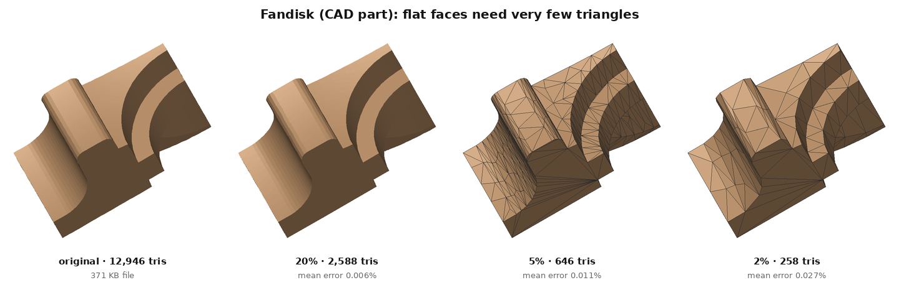
Fandisk: large flat faces need very few triangles, so the error stays tiny.
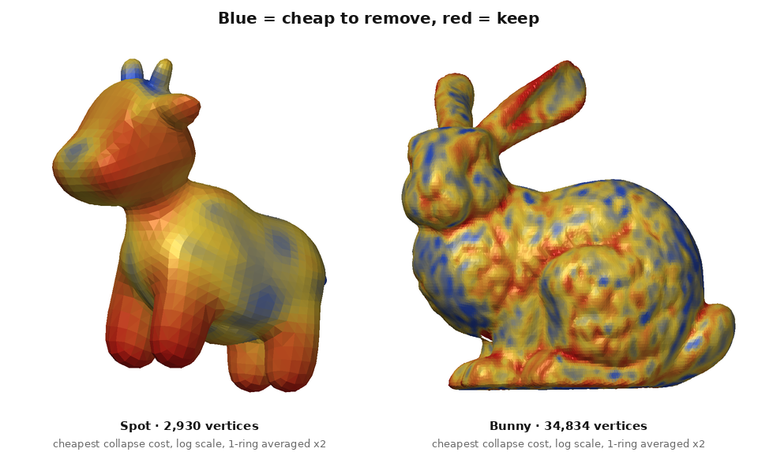
Each vertex coloured by its cheapest collapse cost, the number the priority queue sorts by
(log scale, averaged twice with neighbours for display).
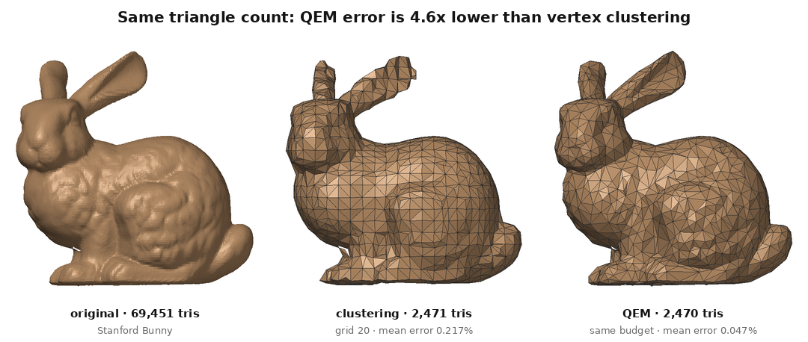
The baseline, vertex clustering, puts the same grid everywhere; QEM spends triangles where the shape needs them.
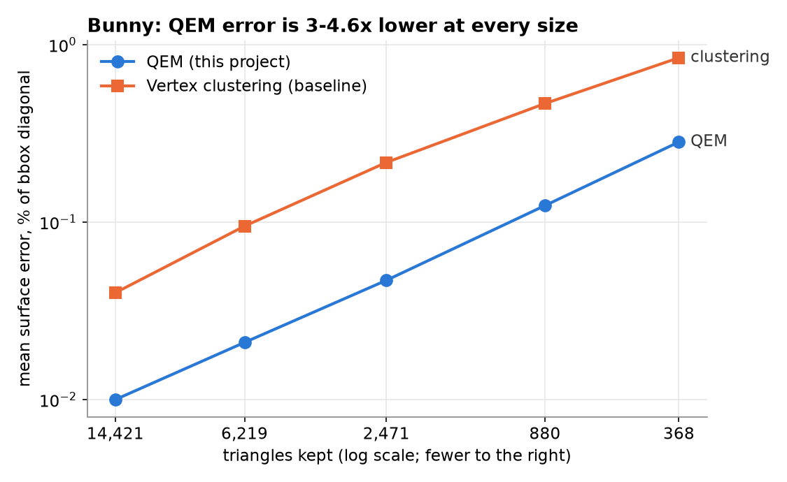
Mean error at five sizes: QEM against clustering.
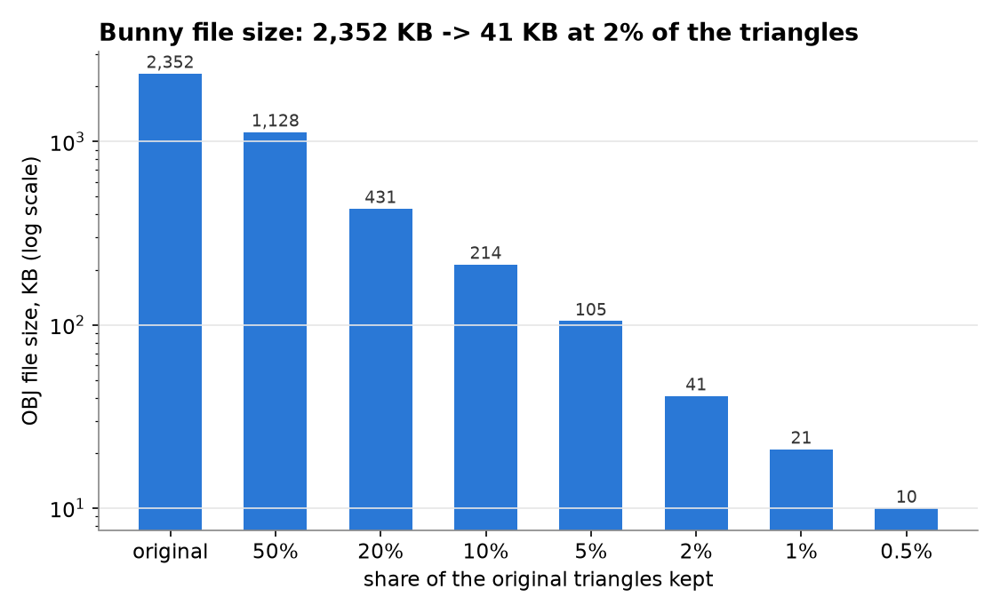
File size of each bunny level.
Loop subdivision
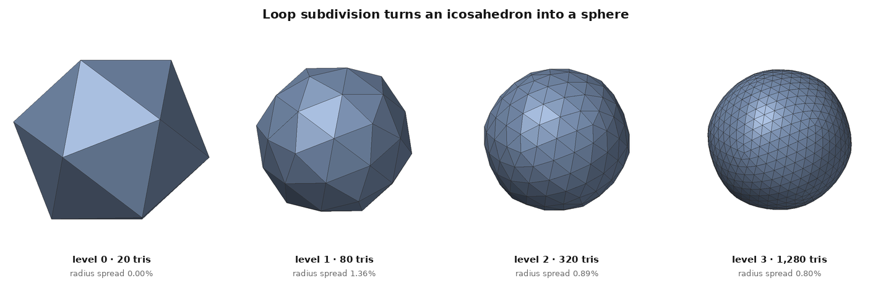
An icosahedron becomes a sphere.
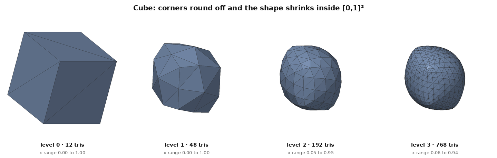
A cube rounds off and shrinks: Loop approximates, it does not interpolate.
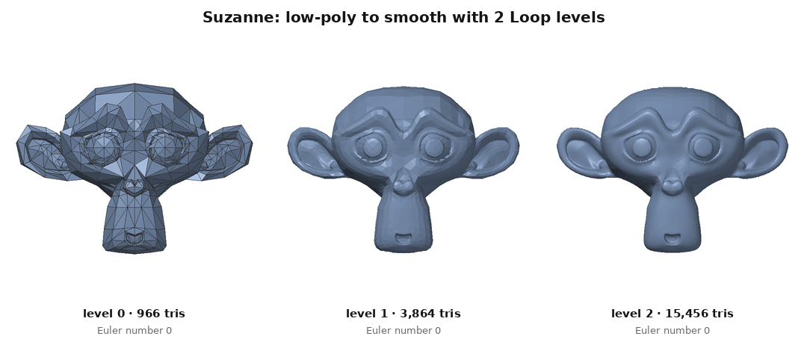
Suzanne, low-poly to smooth.
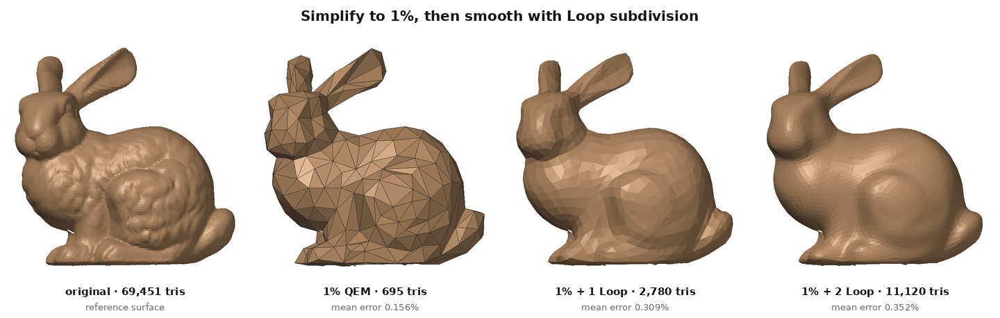
Simplify, then subdivide: smoother is not the same as closer to the original.
What changes when one part is switched off
Each experiment changes exactly one setting and keeps the model, camera and measurement the same.
Full tables: ablation study.
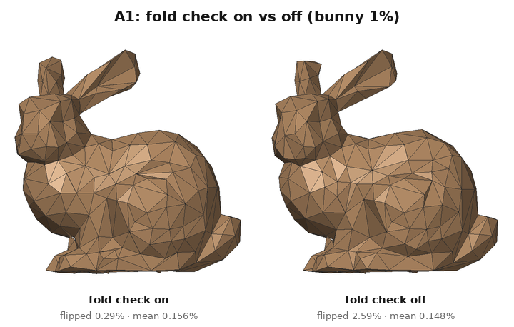
A1, fold check. Without it, many more faces end up turned over. The distance
error barely notices, because it measures how far the surface is, not which way it faces.
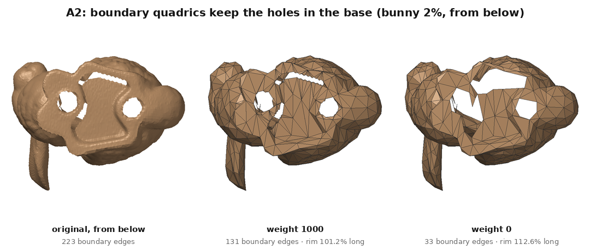
A2, boundary quadrics. Without the extra planes along the rims, the holes in the
bunny's base grow, and the worst-case error jumps.
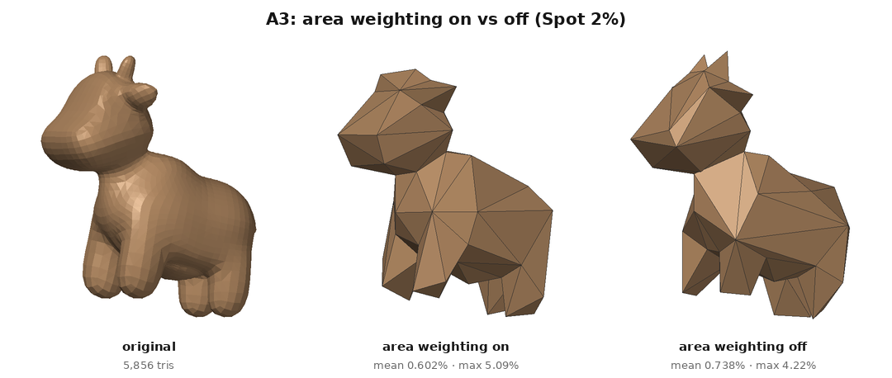
A3, area weighting. With it, Spot's horns (many tiny triangles) are cheap and
vanish first; without it they survive, but the body gets a higher mean error.
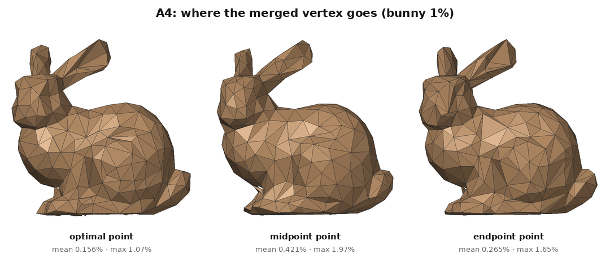
A4, vertex placement. Solving for the optimal point beats both simple choices;
the edge midpoint is the worst.
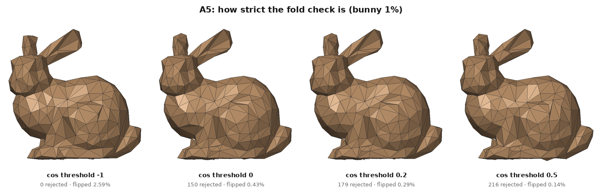
A5, fold threshold. A stricter threshold rejects more collapses and leaves fewer
turned-over faces, at almost no cost in error.
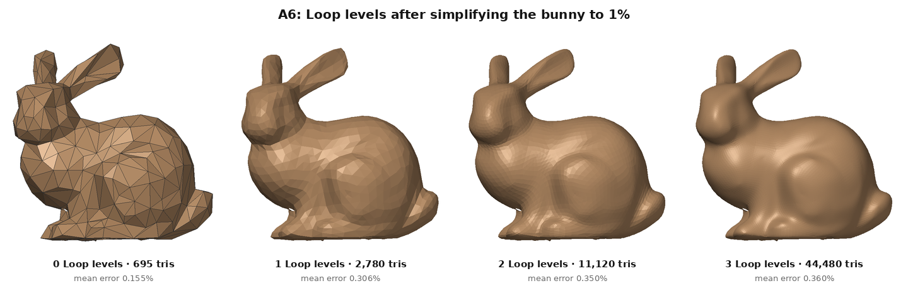
A6, subdivision after simplification. Each level makes the surface look smoother,
but moves it a little further from the original.